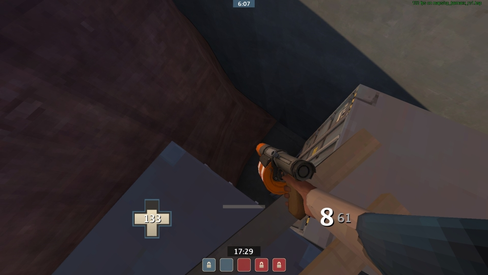

Ez a kis oldalsó rész már régóta zavart, mert teljesen felesleges, bántja a szemet, és gyakorlatilag halálcsapda annak aki bemegy...
...ez a rész ugyanazokkal a problémákkal küzd, ráadásul bent egy még szűkebb lépcsőfeljáró van, amit iszonyú kényelmetlen használni.
Ezt az oldalsó részt mindenképpen át kell majd alakítani, de arra gondoltam, hogy akár össze is köthetnénk a kinti résszel, ezzel egy új bejáratot teremtve. Az épület szélét így kijjebb lehetne húzni, de meg lehet oldani esztétikusan oldalról is a bejáratot. Az jó kérdés, hogy akkor a mostani jobb oldali ajtó megmaradjon-e.
Ezeket a belső tereket, talán az összes folyosót kicsit ki lehetne tágítani, főleg itt ez a kis lobby rész nagyon szűkös, ha egyszerre több ember vár itt.
Ezt a részt is valahogy szebbé lehetne tenni, vagy meg lehetne próbálni valahogy izgalmasabbá is, de arra jelenleg nincs ötletem.
Itt a felső részt mindenképpen izgalmasabbá és látványosabbá kell tenni, én valamilyen függő tornácra gondoltam, ami akár helyettesíthetné is az egyik konténerpárt, és lehet, hogy akkor az onnan lejárást is szebben meg lehet csinálni, mint a másik két konténerrel.

Ezt a lyukat mindenképpen el kéne tüntetni, még ha nem is csináljuk meg a fenti ötletet.
A szebb látvány és a természetesség jegyében ezeket a displacementeket vagy épületrészletekkel, vagy más, logikusabb elemekkel kéne pótolni (simán el tudom készülni, hogy az itt lévő épületek egy együttest alkotnak, sőt, egy aránylag merész húzással még azt is meg lehetne csinálni, hogy az egész középső pont egy épületegyüttes belső udvara legyen - ezzel meg lehetne oldani az oldalsó skybox természetellenességet is.
Itt, és a mapen még több helyen lehetnének a lépcsők kicsit elnyújtottabbak, laposabbak.

Ez egy meglehetősen nagy üres tér, vagy valami találó propegyüttessel kéne feldobni, vagy a mellette található emelettel lehetne összekötni valamilyen módon, akár valamilyen dropdown is lehetne ide onnan.
További szempontok:
- Optimalizáció
- Sok helyen újratextúrázás (több zöld terület gorge vagy hasonló stílusban, illetve egyértelmű színek használata a két oldalon)
- Középső pont környékének befejezése